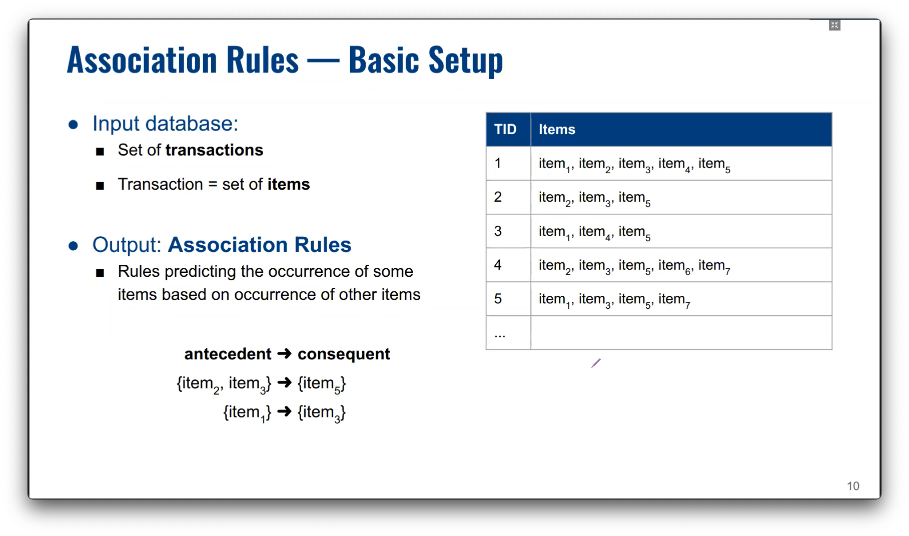
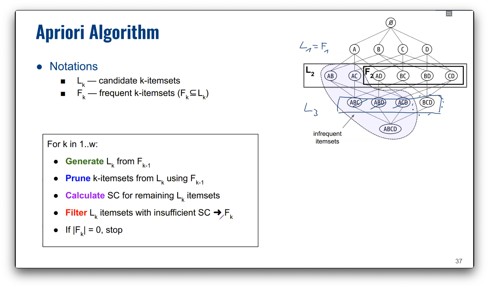

Association rule mining
Suitable for nominal data?
The goal of association rule mining is to find interesting or significant association rules and to find them efficiently.

Applications
-
Market basket analysis
- Shelf management, item placement. (put cereal and milk at opposite ends of NTUC to force people to chance upon other items)
- Promotion bundles
- Recommendations
- Pricing strategies
-
Medical data analysis
Note that there are 2 types of items here.

-
Census data analysis

-
Behaviour data analysis

unique items result in possible rules1.
Definitions
: no. of unique items
Itemset; , : a subset of items
: an association rule
: no. of transactions
Support count: no. of transactions that has this itemset
Support:
Frequent itemset: itemsets with at least support
Support of an association rule:
Confidence of a rule:
Lift:
💡 A high support means that the itemset frequently appear together historically
💡 A high confidence means that if an itemset X appears, it usually appears with itemset Y
💡 If S({milk, bread}) = 10, then S({milk, bread, ...}) ≤ 10


Brute force
- Specify minimum confidence and minimum support.
- List all rules
- Drop rules that don't meet the requirement
Apriori


Two-Part algorithm for mining association rules
- Frequent itemset generation
- Generate all possible itemsets
- Drop itemsets that don't meet the
minSuprequirement
- Association rule generation
- Drop rules that don’t meet the the
minconfrequirement
- Drop rules that don’t meet the the
Explanation why unique items result in possible rules.
An item can be either be on the LHS, RHS or neither ("None").
Item 1: [LHS, RHS, None]
Item 2: [LHS, RHS, None]
Item 3: [LHS, RHS, None]
...
Item d: [LHS, RHS, None]
Any possible state can be obtained by drawing a path from one of the 3 states in Item 1 down to one of the 3 states in Item . For , a possible state is
[LHS,None,RHS,RHS]
which denotes {1} -> {3,4}.
First, we calculate the total number of possible states, which is . -- (1)
However, we should remove the states that are not allowed eg. {} -> {3,4}.
It is not possible to have only one side filled up, say only the RHS. For this to happen, an item is allowed to be in 2 different positions at a time (LHS and None). This gives us positions. -- (2)
Item 1: [LHS, None]
Item 2: [LHS, None]
Item 3: [LHS, None]
...
Item d: [LHS, None]
We repeat this for when items are only filled up on the LHS. This gives us positions. -- (3)
Item 1: [RHS, None]
Item 2: [RHS, None]
Item 3: [RHS, None]
...
Item d: [RHS, None]
Note that in the previous two cases, we eliminated a case twice -- the case where all items are None. So we will add 1 back. -- (4)
Item 1: None
Item 2: None
Item 3: None
...
Item d: None
Starting with the total possible states (), we remove the states that cannot happen from the 3 cases above: